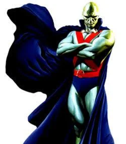
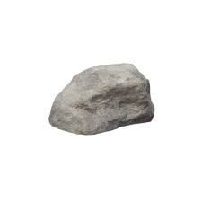

I would see scenes like...
The lush landscapes of the red planet are a feast for the eyes. and complimented by the starry void above, many have gone for the views alone.

And animals like...
He's a very cool man. He's green
And eat food like...
Though not a destination often praised for its cuisine, the martian culture is rich and deep, much like it's manny dishes, which consist of the two most common ingredients; sand and rock.
